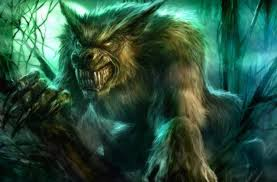

El hombre lobo, también conocido como licántropo, es una criatura legendaria presente en muchas culturas independientes a lo largo del mundo. Se ha dicho que este es el más universal de todos los mitos (probablemente junto con el del vampiro), y aún hoy, mucha gente cree en la existencia de los hombres lobo o de otras clases de «hombres bestia». Todas las características típicas de aquel animal - como son la ferocidad, la fuerza, la astucia y la rapidez- son en ellos claramente manifiestas, para desgracia de todos aquellos que se cruzan en su camino. Según las creencias populares, este hombre lobo puede permanecer con su aspecto animal únicamente por espacio de unas cuantas horas, generalmente cuando sale la luna llena.
En el folclore y la mitología, un hombre lobo es una persona que se transforma en lobo, ya sea a propósito o involuntariamente, a causa de una maldición o de otro agente exterior. El cronista medieval Gervase de Tilbury asoció la transformación con la aparición de la luna llena, pero este concepto fue raramente asociado con el hombre lobo hasta que la idea fue tomada por los escritores de ficción moderna. La mayoría de las referencias contemporáneas están de acuerdo en que un hombre lobo puede ser asesinado si se le dispara una bala de plata, aunque esto es producto de la narrativa moderna y no aparece en las leyendas tradicionales, aunque algunas clásicas dicen que se puede matar cortándole la cabeza y arrancándole el corazón.
Nadie sabe con exactitud cuándo se originaron las leyendas sobre hombres lobo. Puede que se trate de una superstición tan antigua como la humanidad misma y la manifestación observada de diversas patologías. Así parecen indicarlo algunos casos datados en España, como alguno reseñado en el siglo XVI o el de Manuel Blanco Romasanta, siglo XIX, en cuya vida se basan las películas El bosque del lobo, y Romasanta. La caza de la bestia (2004).